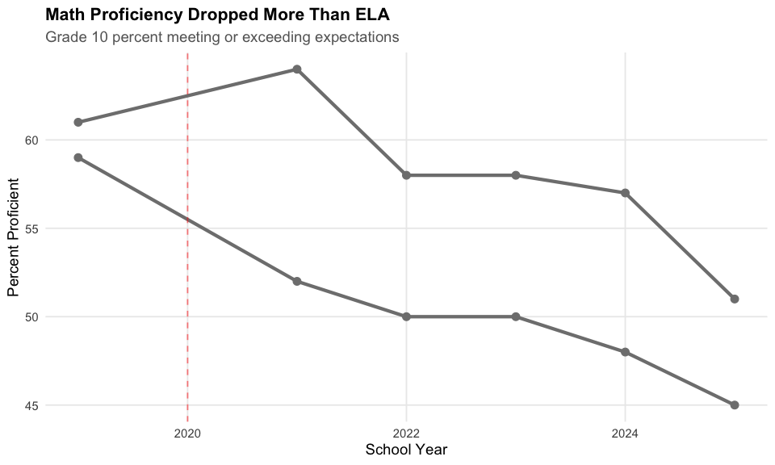
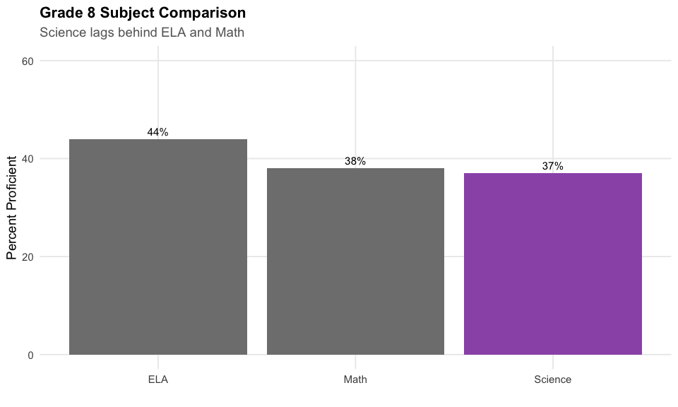
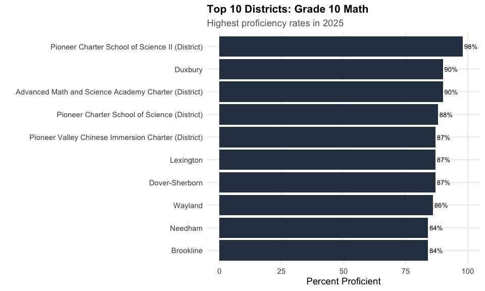
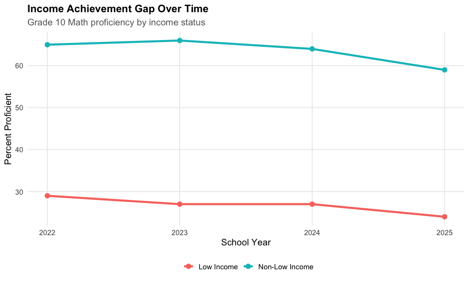

Massachusetts MCAS Assessment Data
Source:vignettes/massachusetts-assessment.Rmd
massachusetts-assessment.Rmd
theme_readme <- function() {
theme_minimal(base_size = 14) +
theme(
plot.title = element_text(face = "bold", size = 16),
plot.subtitle = element_text(color = "gray40"),
panel.grid.minor = element_blank(),
legend.position = "bottom"
)
}
colors <- c("total" = "#2C3E50", "white" = "#3498DB", "black" = "#E74C3C",
"hispanic" = "#F39C12", "asian" = "#9B59B6", "ela" = "#27AE60",
"math" = "#E67E22")
# Fetch assessment data
# Note: Grade 10 data only available 2019+; grades 3-8 available 2017+
assess_multi <- fetch_assessment_multi(c(2019, 2021, 2022, 2023, 2024, 2025),
use_cache = TRUE)
assess_2025 <- fetch_assessment(2025, use_cache = TRUE)1. Grade 10 proficiency dropped 10 points since 2019
Massachusetts Grade 10 ELA proficiency dropped from 61% meeting expectations in 2019 to just 51% in 2025 - a 10 percentage point decline. The COVID pandemic disrupted learning, and scores have not recovered.
g10_ela <- assess_multi %>%
filter(is_state, grade == "10", subject == "ela", subgroup == "all")
g10_ela %>%
select(end_year, meeting_exceeding_pct, scaled_score, student_count) %>%
mutate(pct_display = paste0(round(meeting_exceeding_pct * 100), "%"))
#> end_year meeting_exceeding_pct scaled_score student_count pct_display
#> 1 2019 0.61 506 70815 61%
#> 2 2021 0.64 507 64305 64%
#> 3 2022 0.58 503 67396 58%
#> 4 2023 0.58 504 70583 58%
#> 5 2024 0.57 504 69975 57%
#> 6 2025 0.51 499 67825 51%
ggplot(g10_ela, aes(x = end_year, y = meeting_exceeding_pct * 100)) +
geom_line(linewidth = 1.5, color = colors["total"]) +
geom_point(size = 3, color = colors["total"]) +
geom_vline(xintercept = 2020, linetype = "dashed", color = "red", alpha = 0.5) +
annotate("text", x = 2020, y = 65, label = "COVID\n(no test)", color = "red", hjust = 1.1) +
scale_y_continuous(limits = c(0, 100)) +
labs(title = "Grade 10 ELA Proficiency Has Not Recovered",
subtitle = "Percent Meeting or Exceeding Expectations",
x = "School Year", y = "Percent Proficient") +
theme_readme()
2. Math fared worse than ELA post-pandemic
Math scores dropped more severely than ELA. In 2019, 59% of Grade 10 students met expectations in math. By 2025, only 45% did.
state_subjects <- assess_multi %>%
filter(is_state, grade == "10", subgroup == "all",
subject %in% c("ela", "math"))
state_subjects %>%
select(end_year, subject, meeting_exceeding_pct) %>%
tidyr::pivot_wider(names_from = subject, values_from = meeting_exceeding_pct) %>%
mutate(ela_pct = paste0(round(ela * 100), "%"),
math_pct = paste0(round(math * 100), "%"))
#> # A tibble: 6 × 5
#> end_year ela math ela_pct math_pct
#> <dbl> <dbl> <dbl> <chr> <chr>
#> 1 2019 0.61 0.59 61% 59%
#> 2 2021 0.64 0.52 64% 52%
#> 3 2022 0.58 0.5 58% 50%
#> 4 2023 0.58 0.5 58% 50%
#> 5 2024 0.57 0.48 57% 48%
#> 6 2025 0.51 0.45 51% 45%
ggplot(state_subjects, aes(x = end_year, y = meeting_exceeding_pct * 100, color = subject)) +
geom_line(linewidth = 1.5) +
geom_point(size = 3) +
scale_color_manual(values = c("ela" = colors["ela"], "math" = colors["math"]),
labels = c("ELA", "Math")) +
geom_vline(xintercept = 2020, linetype = "dashed", color = "red", alpha = 0.5) +
labs(title = "Math Proficiency Dropped More Than ELA",
subtitle = "Grade 10 percent meeting or exceeding expectations",
x = "School Year", y = "Percent Proficient", color = "Subject") +
theme_readme()
3. Asian students outperform all groups by 30+ points
Asian students in Massachusetts achieve at the highest levels on MCAS. In Grade 10 Math (2025), 78% of Asian students met expectations compared to 45% statewide - a 33 percentage point gap.
g10_math_race <- assess_2025 %>%
filter(is_state, grade == "10", subject == "math",
subgroup %in% c("all", "white", "black", "hispanic", "asian"))
g10_math_race %>%
select(subgroup, meeting_exceeding_pct, student_count) %>%
arrange(desc(meeting_exceeding_pct)) %>%
mutate(pct_display = paste0(round(meeting_exceeding_pct * 100), "%"))
#> subgroup meeting_exceeding_pct student_count pct_display
#> 1 asian 0.78 5178 78%
#> 2 white 0.53 35654 53%
#> 3 all 0.45 67096 45%
#> 4 black 0.26 6791 26%
#> 5 hispanic 0.23 16357 23%
g10_math_race <- g10_math_race %>%
mutate(subgroup_label = factor(subgroup,
levels = c("asian", "white", "all", "hispanic", "black"),
labels = c("Asian", "White", "All Students", "Hispanic", "Black")))
ggplot(g10_math_race, aes(x = subgroup_label, y = meeting_exceeding_pct * 100, fill = subgroup)) +
geom_col() +
geom_text(aes(label = paste0(round(meeting_exceeding_pct * 100), "%")),
vjust = -0.5, size = 4) +
scale_fill_manual(values = c("all" = colors["total"], "white" = colors["white"],
"black" = colors["black"], "hispanic" = colors["hispanic"],
"asian" = colors["asian"]), guide = "none") +
scale_y_continuous(limits = c(0, 100)) +
labs(title = "Achievement Gaps in Grade 10 Math",
subtitle = "2025 percent meeting or exceeding expectations by race/ethnicity",
x = "", y = "Percent Proficient") +
theme_readme()
4. English Learners face a 40-point gap
Only 5% of English Learners met expectations in Grade 10 Math compared to 45% of all students - a 40 percentage point gap. This is the largest achievement gap in Massachusetts.
el_gap <- assess_2025 %>%
filter(is_state, grade == "10", subject == "math",
subgroup %in% c("all", "english_learner", "special_ed", "low_income"))
el_gap %>%
select(subgroup, meeting_exceeding_pct, student_count) %>%
arrange(desc(meeting_exceeding_pct)) %>%
mutate(pct_display = paste0(round(meeting_exceeding_pct * 100), "%"))
#> subgroup meeting_exceeding_pct student_count pct_display
#> 1 all 0.45 67096 45%
#> 2 low_income 0.24 27828 24%
#> 3 special_ed 0.12 12512 12%
#> 4 english_learner 0.05 5724 5%
el_gap <- el_gap %>%
mutate(subgroup_label = factor(subgroup,
levels = c("all", "low_income", "special_ed", "english_learner"),
labels = c("All Students", "Low Income", "Special Ed", "English Learner")))
ggplot(el_gap, aes(x = subgroup_label, y = meeting_exceeding_pct * 100)) +
geom_col(fill = colors["total"]) +
geom_text(aes(label = paste0(round(meeting_exceeding_pct * 100), "%")),
vjust = -0.5, size = 4) +
scale_y_continuous(limits = c(0, 60)) +
labs(title = "Special Populations Face Large Achievement Gaps",
subtitle = "Grade 10 Math proficiency rates (2025)",
x = "", y = "Percent Proficient") +
theme_readme()
5. Boston trails state average by 7-11 points
Boston Public Schools consistently underperforms the state average across subjects. In 2025, only 40% of Boston Grade 10 students were proficient in ELA (vs. 51% statewide).
boston_state <- assess_multi %>%
filter((is_state | district_id == "0035") & is_district == FALSE | district_id == "0035",
grade == "10", subject == "ela", subgroup == "all") %>%
mutate(location = if_else(is_state, "Massachusetts", "Boston"))
boston_state %>%
select(end_year, location, meeting_exceeding_pct) %>%
tidyr::pivot_wider(names_from = location, values_from = meeting_exceeding_pct)
#> # A tibble: 6 × 3
#> end_year Massachusetts Boston
#> <dbl> <list> <list>
#> 1 2019 <dbl [1]> <dbl [28]>
#> 2 2021 <dbl [1]> <dbl [26]>
#> 3 2022 <dbl [1]> <dbl [26]>
#> 4 2023 <dbl [1]> <dbl [26]>
#> 5 2024 <dbl [1]> <dbl [26]>
#> 6 2025 <dbl [1]> <dbl [25]>
ggplot(boston_state, aes(x = end_year, y = meeting_exceeding_pct * 100, color = location)) +
geom_line(linewidth = 1.5) +
geom_point(size = 3) +
scale_color_manual(values = c("Massachusetts" = colors["total"], "Boston" = colors["black"])) +
labs(title = "Boston Trails State Average",
subtitle = "Grade 10 ELA proficiency rates",
x = "School Year", y = "Percent Proficient", color = "") +
theme_readme()
6. Grade 3 sets the foundation
Third grade is the first year of MCAS testing. In 2025, 42% of Grade 3 students were proficient in ELA and 44% in Math. These early indicators predict future success.
g3_trend <- assess_multi %>%
filter(is_state, grade == "03", subgroup == "all",
subject %in% c("ela", "math"))
g3_trend %>%
filter(end_year == 2025) %>%
select(subject, meeting_exceeding_pct, student_count)
#> subject meeting_exceeding_pct student_count
#> 1 ela 0.42 66312
#> 2 math 0.44 66361
ggplot(g3_trend, aes(x = end_year, y = meeting_exceeding_pct * 100, color = subject)) +
geom_line(linewidth = 1.5) +
geom_point(size = 3) +
scale_color_manual(values = c("ela" = colors["ela"], "math" = colors["math"]),
labels = c("ELA", "Math")) +
labs(title = "Grade 3 Proficiency Trends",
subtitle = "Early grades show similar pandemic impact",
x = "School Year", y = "Percent Proficient", color = "Subject") +
theme_readme()
7. Science scores are lowest across subjects
Science proficiency lags behind ELA and Math. Only 37% of Grade 8 students met expectations in Science in 2025.
g8_subjects <- assess_2025 %>%
filter(is_state, grade == "08", subgroup == "all",
subject %in% c("ela", "math", "science"))
g8_subjects %>%
select(subject, meeting_exceeding_pct, scaled_score, student_count) %>%
arrange(desc(meeting_exceeding_pct))
#> subject meeting_exceeding_pct scaled_score student_count
#> 1 ela 0.44 494 66902
#> 2 math 0.38 493 66857
#> 3 science 0.37 492 66355
g8_subjects <- g8_subjects %>%
mutate(subject_label = factor(subject,
levels = c("ela", "math", "science"),
labels = c("ELA", "Math", "Science")))
ggplot(g8_subjects, aes(x = subject_label, y = meeting_exceeding_pct * 100, fill = subject)) +
geom_col() +
geom_text(aes(label = paste0(round(meeting_exceeding_pct * 100), "%")),
vjust = -0.5, size = 4) +
scale_fill_manual(values = c("ela" = colors["ela"], "math" = colors["math"],
"science" = "#9B59B6"), guide = "none") +
scale_y_continuous(limits = c(0, 60)) +
labs(title = "Grade 8 Subject Comparison",
subtitle = "Science lags behind ELA and Math",
x = "", y = "Percent Proficient") +
theme_readme()
8. High school science options: Biology vs. Physics
High school students can take science MCAS in Biology or Physics. Biology has lower proficiency (39%) than Physics (44%), though more students take Biology.
hs_science <- assess_2025 %>%
filter(is_state, grade == "HS SCI", subgroup == "all",
subject %in% c("biology", "physics"))
hs_science %>%
select(subject, meeting_exceeding_pct, student_count)
#> subject meeting_exceeding_pct student_count
#> 1 biology 0.39 52040
#> 2 physics 0.44 13157
hs_science <- hs_science %>%
mutate(subject_label = factor(subject, levels = c("biology", "physics"),
labels = c("Biology", "Physics")))
ggplot(hs_science, aes(x = subject_label, y = meeting_exceeding_pct * 100)) +
geom_col(fill = colors["total"]) +
geom_text(aes(label = paste0(round(meeting_exceeding_pct * 100), "%")),
vjust = -0.5, size = 4) +
scale_y_continuous(limits = c(0, 60)) +
labs(title = "High School Science MCAS",
subtitle = "Biology vs. Physics proficiency rates (2025)",
x = "", y = "Percent Proficient") +
theme_readme()
9. Middle school is where gaps widen
Achievement gaps by race/ethnicity widen in middle school. By Grade 8, the gap between White and Black students in math is 26 percentage points.
middle_race <- assess_2025 %>%
filter(is_state, subject == "math",
grade %in% c("03", "05", "08"),
subgroup %in% c("white", "black", "hispanic"))
middle_race %>%
select(grade, subgroup, meeting_exceeding_pct) %>%
tidyr::pivot_wider(names_from = subgroup, values_from = meeting_exceeding_pct)
#> # A tibble: 3 × 4
#> grade black hispanic white
#> <chr> <dbl> <dbl> <dbl>
#> 1 03 0.25 0.24 0.53
#> 2 05 0.21 0.2 0.48
#> 3 08 0.21 0.19 0.45
middle_race <- middle_race %>%
mutate(grade_label = factor(grade, levels = c("03", "05", "08"),
labels = c("Grade 3", "Grade 5", "Grade 8")))
ggplot(middle_race, aes(x = grade_label, y = meeting_exceeding_pct * 100,
fill = subgroup, group = subgroup)) +
geom_col(position = "dodge") +
scale_fill_manual(values = c("white" = colors["white"], "black" = colors["black"],
"hispanic" = colors["hispanic"]),
labels = c("Black", "Hispanic", "White")) +
labs(title = "Achievement Gaps Widen Through Middle School",
subtitle = "Math proficiency by race/ethnicity (2025)",
x = "", y = "Percent Proficient", fill = "") +
theme_readme()
10. Top districts: Lexington leads the pack
Lexington, one of Massachusetts’ wealthiest suburbs, leads with 82% Grade 10 Math proficiency. The top 10 districts are dominated by affluent suburbs.
top_districts <- assess_2025 %>%
filter(is_district, grade == "10", subject == "math", subgroup == "all") %>%
arrange(desc(meeting_exceeding_pct)) %>%
head(10)
top_districts %>%
select(district_name, meeting_exceeding_pct, student_count) %>%
mutate(pct_display = paste0(round(meeting_exceeding_pct * 100), "%"))
#> district_name meeting_exceeding_pct
#> 1 Pioneer Charter School of Science II (District) 0.98
#> 2 Duxbury 0.90
#> 3 Advanced Math and Science Academy Charter (District) 0.90
#> 4 Pioneer Charter School of Science (District) 0.88
#> 5 Lexington 0.87
#> 6 Pioneer Valley Chinese Immersion Charter (District) 0.87
#> 7 Dover-Sherborn 0.87
#> 8 Wayland 0.86
#> 9 Brookline 0.84
#> 10 Needham 0.84
#> student_count pct_display
#> 1 50 98%
#> 2 175 90%
#> 3 145 90%
#> 4 57 88%
#> 5 604 87%
#> 6 38 87%
#> 7 140 87%
#> 8 194 86%
#> 9 553 84%
#> 10 370 84%
top_districts <- top_districts %>%
mutate(district_label = reorder(district_name, meeting_exceeding_pct))
ggplot(top_districts, aes(x = district_label, y = meeting_exceeding_pct * 100)) +
geom_col(fill = colors["total"]) +
geom_text(aes(label = paste0(round(meeting_exceeding_pct * 100), "%")),
hjust = -0.1, size = 3.5) +
coord_flip() +
scale_y_continuous(limits = c(0, 100)) +
labs(title = "Top 10 Districts: Grade 10 Math",
subtitle = "Highest proficiency rates in 2025",
x = "", y = "Percent Proficient") +
theme_readme()
11. Struggling districts need support
The lowest-performing districts are primarily urban Gateway Cities and small rural districts. Lawrence and Holyoke hover around 20% math proficiency.
bottom_districts <- assess_2025 %>%
filter(is_district, grade == "10", subject == "math", subgroup == "all",
student_count >= 100) %>% # Filter to substantial districts
arrange(meeting_exceeding_pct) %>%
head(10)
bottom_districts %>%
select(district_name, meeting_exceeding_pct, student_count) %>%
mutate(pct_display = paste0(round(meeting_exceeding_pct * 100), "%"))
#> district_name meeting_exceeding_pct
#> 1 Holyoke 0.10
#> 2 Lawrence 0.11
#> 3 New Bedford 0.13
#> 4 Northern Berkshire Regional Vocational Technical 0.15
#> 5 Lynn 0.16
#> 6 Fall River 0.17
#> 7 Brockton 0.18
#> 8 Chelsea 0.18
#> 9 Springfield 0.18
#> 10 Chicopee 0.19
#> student_count pct_display
#> 1 339 10%
#> 2 754 11%
#> 3 667 13%
#> 4 123 15%
#> 5 1238 16%
#> 6 611 17%
#> 7 722 18%
#> 8 338 18%
#> 9 1500 18%
#> 10 514 19%
bottom_districts <- bottom_districts %>%
mutate(district_label = reorder(district_name, -meeting_exceeding_pct))
ggplot(bottom_districts, aes(x = district_label, y = meeting_exceeding_pct * 100)) +
geom_col(fill = colors["black"]) +
geom_text(aes(label = paste0(round(meeting_exceeding_pct * 100), "%")),
hjust = -0.1, size = 3.5) +
coord_flip() +
scale_y_continuous(limits = c(0, 50)) +
labs(title = "Districts Needing Support: Grade 10 Math",
subtitle = "Lowest proficiency rates among districts with 100+ students (2025)",
x = "", y = "Percent Proficient") +
theme_readme()
12. Gender gap favors girls in ELA, boys even in Math
Girls consistently outperform boys in ELA, while math shows no significant gender gap. In Grade 10 ELA (2025), 57% of girls met expectations vs. 45% of boys.
gender_gap <- assess_2025 %>%
filter(is_state, grade == "10",
subject %in% c("ela", "math"),
subgroup %in% c("male", "female"))
gender_gap %>%
select(subject, subgroup, meeting_exceeding_pct) %>%
tidyr::pivot_wider(names_from = subgroup, values_from = meeting_exceeding_pct)
#> # A tibble: 2 × 3
#> subject female male
#> <chr> <dbl> <dbl>
#> 1 ela 0.57 0.45
#> 2 math 0.44 0.45
gender_gap <- gender_gap %>%
mutate(subject_label = factor(subject, levels = c("ela", "math"),
labels = c("ELA", "Math")))
ggplot(gender_gap, aes(x = subject_label, y = meeting_exceeding_pct * 100, fill = subgroup)) +
geom_col(position = "dodge") +
geom_text(aes(label = paste0(round(meeting_exceeding_pct * 100), "%")),
position = position_dodge(width = 0.9), vjust = -0.5, size = 3.5) +
scale_fill_manual(values = c("female" = "#9B59B6", "male" = "#3498DB"),
labels = c("Female", "Male")) +
scale_y_continuous(limits = c(0, 70)) +
labs(title = "Gender Gaps in Grade 10 Achievement",
subtitle = "Girls lead in ELA; Math is nearly equal",
x = "", y = "Percent Proficient", fill = "") +
theme_readme()
13. Income is destiny: Low-income students trail by 30 points
The income achievement gap is stark. In Grade 10 Math, only 24% of low-income students met expectations compared to 59% of non-low-income students.
income_trend <- assess_multi %>%
filter(is_state, grade == "10", subject == "math",
subgroup %in% c("low_income", "not_low_income"))
income_trend %>%
filter(end_year == 2025) %>%
select(subgroup, meeting_exceeding_pct, student_count)
#> subgroup meeting_exceeding_pct student_count
#> 1 low_income 0.24 27828
#> 2 not_low_income 0.59 39268
income_trend <- income_trend %>%
mutate(income_label = if_else(subgroup == "low_income", "Low Income", "Non-Low Income"))
ggplot(income_trend, aes(x = end_year, y = meeting_exceeding_pct * 100, color = income_label)) +
geom_line(linewidth = 1.5) +
geom_point(size = 3) +
labs(title = "Income Achievement Gap Over Time",
subtitle = "Grade 10 Math proficiency by income status",
x = "School Year", y = "Percent Proficient", color = "") +
theme_readme()
14. Scaled scores tell a consistent story
Scaled scores provide another lens on achievement. The state average scaled score in Grade 10 ELA dropped from 506 in 2019 to 499 in 2025.
scaled_trend <- assess_multi %>%
filter(is_state, grade == "10", subgroup == "all",
subject %in% c("ela", "math"))
scaled_trend %>%
select(end_year, subject, scaled_score) %>%
tidyr::pivot_wider(names_from = subject, values_from = scaled_score)
#> # A tibble: 6 × 3
#> end_year ela math
#> <dbl> <dbl> <dbl>
#> 1 2019 506 505
#> 2 2021 507 501
#> 3 2022 503 501
#> 4 2023 504 500
#> 5 2024 504 500
#> 6 2025 499 498
ggplot(scaled_trend, aes(x = end_year, y = scaled_score, color = subject)) +
geom_line(linewidth = 1.5) +
geom_point(size = 3) +
scale_color_manual(values = c("ela" = colors["ela"], "math" = colors["math"]),
labels = c("ELA", "Math")) +
labs(title = "Scaled Score Trends",
subtitle = "Grade 10 state average scaled scores",
x = "School Year", y = "Scaled Score", color = "Subject") +
theme_readme()
15. 2019 was the pre-pandemic baseline
2019 represents pre-pandemic baseline performance for Grade 10. Scores have not returned to pre-COVID levels.
baseline <- assess_multi %>%
filter(end_year == 2019, is_state, grade == "10",
subject == "ela", subgroup == "all")
baseline %>%
select(end_year, meeting_exceeding_pct, scaled_score, student_count) %>%
mutate(pct_display = paste0(round(meeting_exceeding_pct * 100), "%"))
#> end_year meeting_exceeding_pct scaled_score student_count pct_display
#> 1 2019 0.61 506 70815 61%
all_years <- assess_multi %>%
filter(is_state, grade == "10", subject == "ela", subgroup == "all") %>%
mutate(era = if_else(end_year <= 2019, "Pre-COVID", "Post-COVID"))
ggplot(all_years, aes(x = end_year, y = meeting_exceeding_pct * 100, color = era)) +
geom_line(linewidth = 1.5) +
geom_point(size = 3) +
scale_color_manual(values = c("Pre-COVID" = colors["ela"], "Post-COVID" = colors["math"])) +
geom_vline(xintercept = 2020, linetype = "dashed", color = "gray50") +
labs(title = "Pre-COVID vs. Post-COVID Achievement",
subtitle = "Grade 10 ELA proficiency",
x = "School Year", y = "Percent Proficient", color = "") +
theme_readme()
Data Notes
MCAS Assessment Data
- Source: Massachusetts DESE via Socrata API (educationtocareer.data.mass.gov)
- Dataset ID: i9w6-niyt (MCAS Achievement Results)
- Years Available: 2017-2019, 2021-2025 (no 2020 due to COVID pandemic)
Proficiency Levels
MCAS uses four performance levels: - Exceeding Expectations (E): Advanced understanding - Meeting Expectations (M): Grade-level proficiency - Partially Meeting Expectations (PM): Approaching proficiency - Not Meeting Expectations (NM): Below grade level
“Meeting or Exceeding” (M+E) is the standard proficiency benchmark.
Suppression Rules
- Data suppressed when N < 10 students to protect privacy
- Percentages may not sum to 100% due to rounding
Grade Levels Tested
- Grades 3-8: ELA and Math annually
- Grade 5 & 8: Science
- Grade 10: ELA, Math, and Science (high school graduation requirement)
- High School Science: Biology or Physics
sessionInfo()
#> R version 4.5.2 (2025-10-31)
#> Platform: x86_64-pc-linux-gnu
#> Running under: Ubuntu 24.04.3 LTS
#>
#> Matrix products: default
#> BLAS: /usr/lib/x86_64-linux-gnu/openblas-pthread/libblas.so.3
#> LAPACK: /usr/lib/x86_64-linux-gnu/openblas-pthread/libopenblasp-r0.3.26.so; LAPACK version 3.12.0
#>
#> locale:
#> [1] LC_CTYPE=C.UTF-8 LC_NUMERIC=C LC_TIME=C.UTF-8
#> [4] LC_COLLATE=C.UTF-8 LC_MONETARY=C.UTF-8 LC_MESSAGES=C.UTF-8
#> [7] LC_PAPER=C.UTF-8 LC_NAME=C LC_ADDRESS=C
#> [10] LC_TELEPHONE=C LC_MEASUREMENT=C.UTF-8 LC_IDENTIFICATION=C
#>
#> time zone: UTC
#> tzcode source: system (glibc)
#>
#> attached base packages:
#> [1] stats graphics grDevices utils datasets methods base
#>
#> other attached packages:
#> [1] scales_1.4.0 dplyr_1.2.0 ggplot2_4.0.2 maschooldata_0.1.0
#>
#> loaded via a namespace (and not attached):
#> [1] gtable_0.3.6 jsonlite_2.0.0 compiler_4.5.2 tidyselect_1.2.1
#> [5] tidyr_1.3.2 jquerylib_0.1.4 systemfonts_1.3.1 textshaping_1.0.4
#> [9] yaml_2.3.12 fastmap_1.2.0 R6_2.6.1 labeling_0.4.3
#> [13] generics_0.1.4 curl_7.0.0 knitr_1.51 tibble_3.3.1
#> [17] desc_1.4.3 bslib_0.10.0 pillar_1.11.1 RColorBrewer_1.1-3
#> [21] rlang_1.1.7 utf8_1.2.6 cachem_1.1.0 xfun_0.56
#> [25] fs_1.6.6 sass_0.4.10 S7_0.2.1 cli_3.6.5
#> [29] pkgdown_2.2.0 withr_3.0.2 magrittr_2.0.4 digest_0.6.39
#> [33] grid_4.5.2 rappdirs_0.3.4 lifecycle_1.0.5 vctrs_0.7.1
#> [37] evaluate_1.0.5 glue_1.8.0 farver_2.1.2 codetools_0.2-20
#> [41] ragg_1.5.0 httr_1.4.8 rmarkdown_2.30 purrr_1.2.1
#> [45] tools_4.5.2 pkgconfig_2.0.3 htmltools_0.5.9